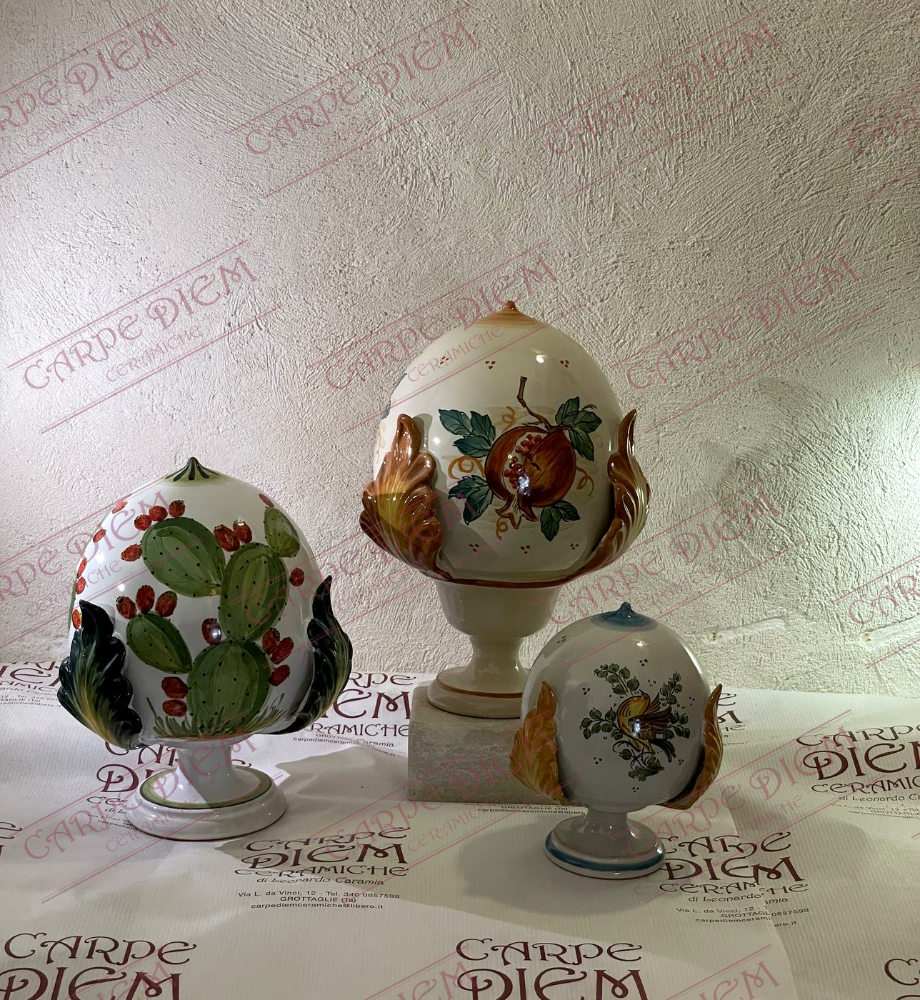
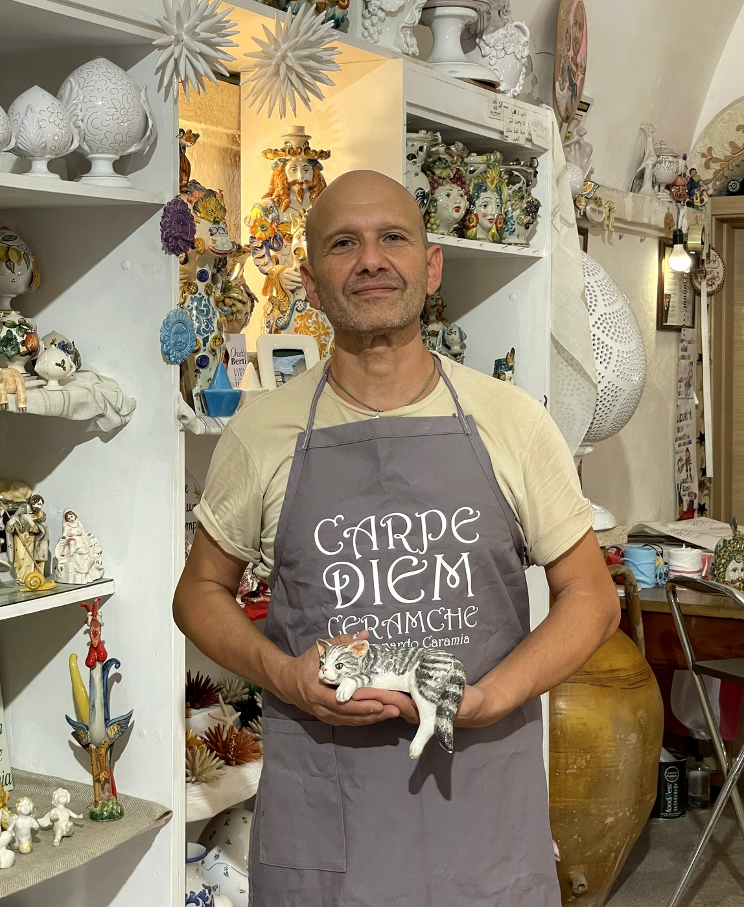
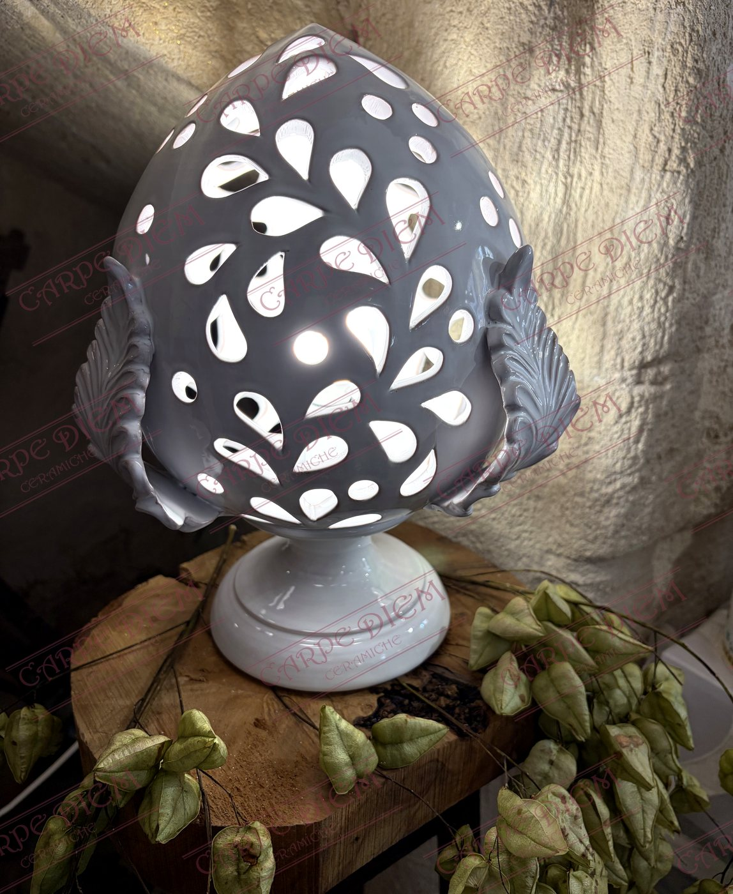

Carpe Diem Ceramiche nasce il 18 luglio 2013 nel Quartiere delle Ceramiche di Grottaglie. Dietro ogni pezzo c'è Leonardo Caramia, artigiano con esperienza decennale nella lavorazione della ceramica, che porta avanti il proprio lavoro con passione e dedizione.
Il celebre invito oraziano a godersi il presente — Carpe Diem, "cogli l'attimo" — è diventato il motto della nostra attività, prima ancora che uno stile di vita.
Significa saper cogliere le occasioni favorevoli al momento giusto, senza rimandare il presente a preoccupazioni future — ma conservando la capacità di apprezzare l'oggi, con gratitudine.
Nel nostro negozio trovate complementi d'arredo, lampade, applique da parete, centrotavola, acquasantiere, arte sacra e cavalieri — e, soprattutto, i simboli della tradizione grottagliese: galletti, pomi e le pupe dello Ius Primae Noctis. Siamo al vostro fianco nei momenti più importanti con le nostre bomboniere, e diamo vita a ogni vostra idea con oggetti personalizzati e unici.


